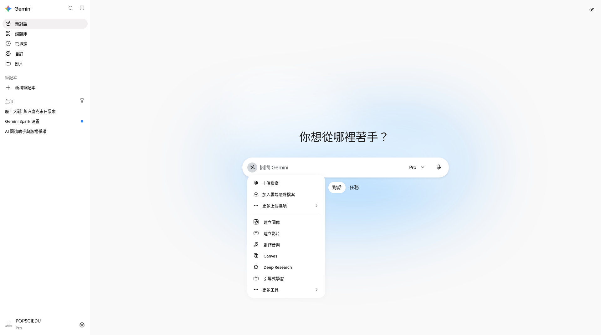
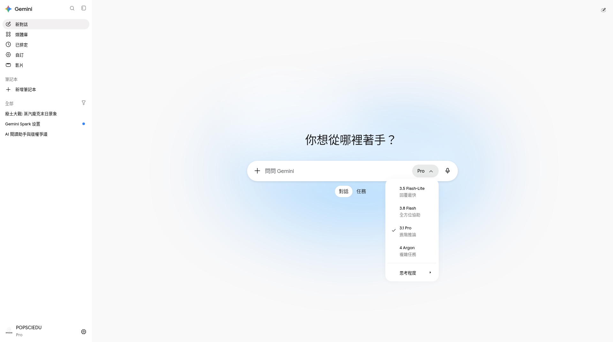
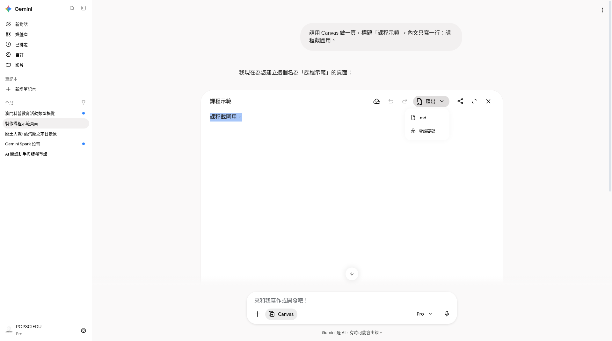
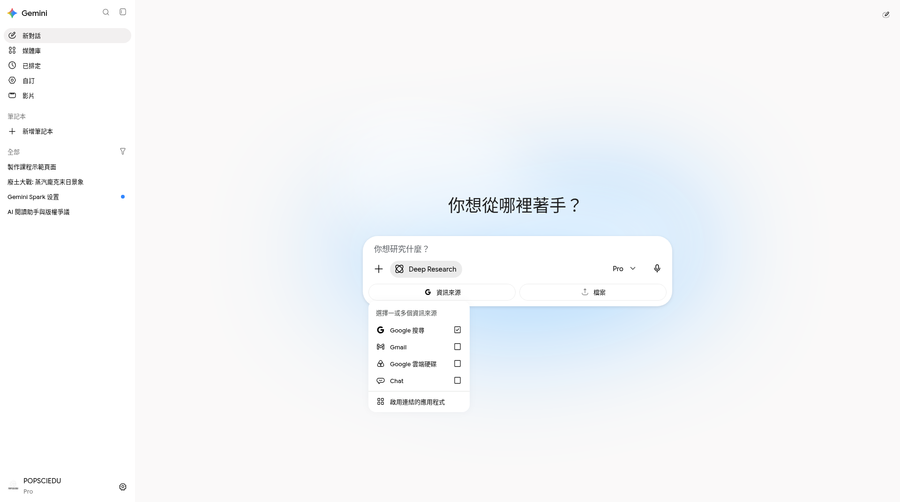
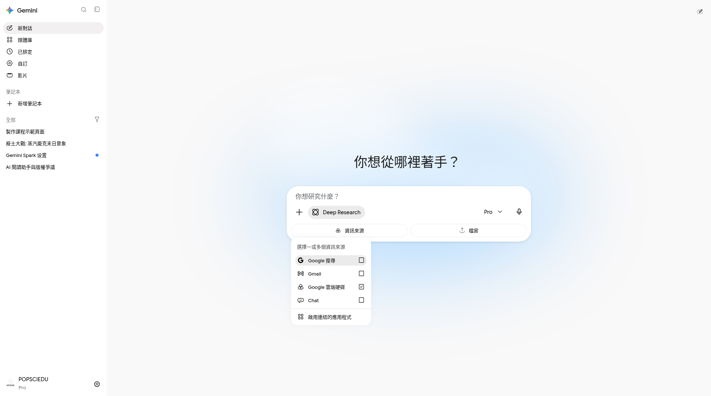
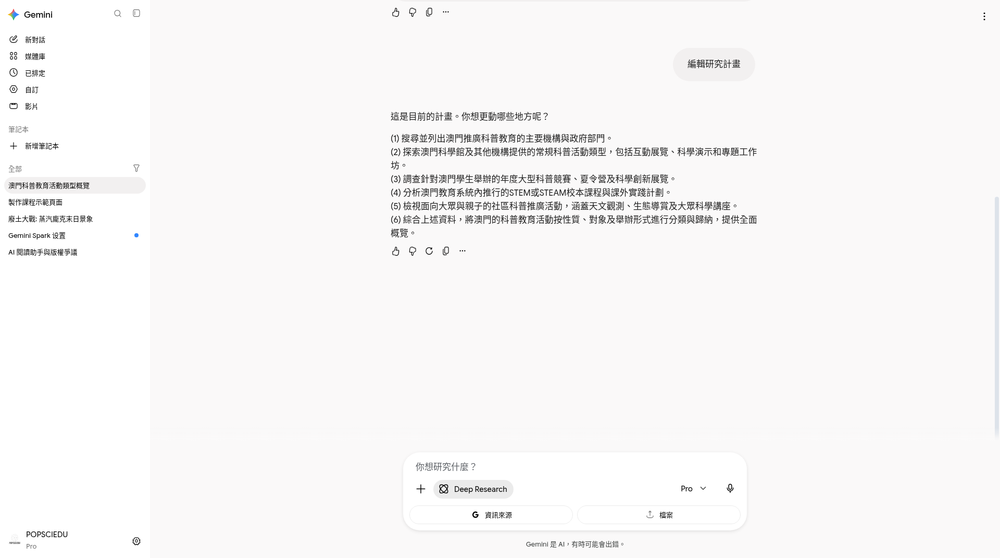

動手做 · 全功能走讀
一邊開 Gemini，一邊勾選與對照截圖
對齊任務 0–8。已有實拍直接對照；缺項為「待補／學員自對照」。本頁不自動連 API。
全功能地圖
另開視窗登入 gemini.google.com。練習只用無機密材料。
任務 0 · 平台與帳號覺察

階段 A · 一般聊天（任務 1）
A-1 開站與新對話


A-2 編輯提示／多答案
待補／學員自對照 · 編輯已送出提示
標出編輯圖示並重跑。
待補／學員自對照 · 多版本／再生
兩版並陳或再生按鈕。
階段 B · 多模態、模型、匯出（任務 2）
B-1 圖片與 PDF

待補／學員自對照 · 附加 PDF
檔名與讀到什麼列表。
B-2 影音工具列

B-3 模型切換
記下 Flash-Lite／Flash／Pro／Argon／思考程度——無 Auto。

B-4 匯出

階段 C · Live（手機）、產圖、影音入口
C-1 Gemini Live（手機）
Live 暫非網頁——必須手機示範。本 pack 無手機實拍。
待補／學員自對照 · 手機 Live 介面
Android／iOS App → Live／相機。

C-3 影片／音樂／引導式學習
待補／學員自對照 · 影片或音樂入口
＋選單有無建立影片／音樂。
待補／學員自對照 · 引導式學習
有按鈕就跟走；否則蘇格拉底式代替提示。
階段 D · Deep Research（任務 3）
Brief：sample-deep-research-prompt.md
D-1 開 Research 與來源


D-2 關搜尋（可還原）

D-3 編輯計畫與驗收

待補／學員自對照 · 報告引用
點開一則來源核對。
階段 E · Canvas（任務 4）
E-1 規格→最小版→迭代


E-2 Create（可能待補）
本示範帳無 Create 下拉——有則自截；無則標待補。
待補／學員自對照 · Create 下拉
標出選項。
待補／學員自對照 · 轉換成品
網頁或資訊圖等。
階段 F · Skill（任務 5）
材料：sample-skill-instructions.md · raw · cleaned · brief
F-1 建立並呼叫 Skill


階段 G · Notebook、Workspace、連接（任務 6–8）
G-1 Gemini Notebook
本示範帳獨立站 unsupported；App 內可能無法載入——失敗請註記。

待補／學員自對照 · 來源列表
獨立站或可用帳號自截。
待補／學員自對照 · Studio 其一
Audio／Quiz／簡報。
G-2 Workspace 側欄
待補／學員自對照 · Gmail 側欄（勿寄）
草稿未寄出。
待補／學員自對照 · Docs 側欄
改寫或大綱。
待補／學員自對照 · Sheets
公式說明。
待補／學員自對照 · Slides
大綱。
待補／學員自對照 · Drive
選檔提問。
待補／學員自對照 · Chat
或無權限註記。
G-3 Connected Apps 與隱私

待補／學員自對照 · 活動或隱私設定
可打碼個資。
走讀總勾選
實作測驗 · PRQ1
剛上傳 PDF 後，較穩的第一步是？
實作測驗 · PRQ2
Deep Research 開始前應？
實作測驗 · PRQ3
建立練習 Skill 後，呼叫方式較符合現況？
實作測驗 · PRQ4
介面找不到產圖、Create 或獨立 Notebook 時？